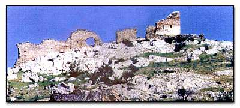

Tο Παλαιό Γυναικόκαστρο του Κιλκίς
 Χτίστηκε από τον αυτοκράτορα Ανδρόνικο Γ' Παλαιολόγο (1328-1341) στην κορυφή απόκρημνου λόφου για να ενισχύει την άμυνα της Θεσσαλονίκης, σε συνδυασμό με μια σειρά άλλων μικρότερων κάστρων στην περιφέρεια της πόλης, από τις επιδρομές του βορρά. Ονομάστηκε “Γυναικόκαστρο” (μετάφραση του αντίστοιχου τουρκικού ονόματος “Αβρέτ Χισάρ”) όταν, κατά την πολιορκία των Τούρκων το 1383, διοικητής των Βυζαντινών ήταν μια γυναίκα, η Μαρουλία. Ωστόσο η παράδοση αναφέρει ότι το όνομα αυτό οφείλεται στο γεγονός ότι το κάστρο ήταν τόσο καλά οχυρωμένο, ώστε θα μπορούσαν να το υπερασπιστούν ακόμη και γυναίκες. | ||